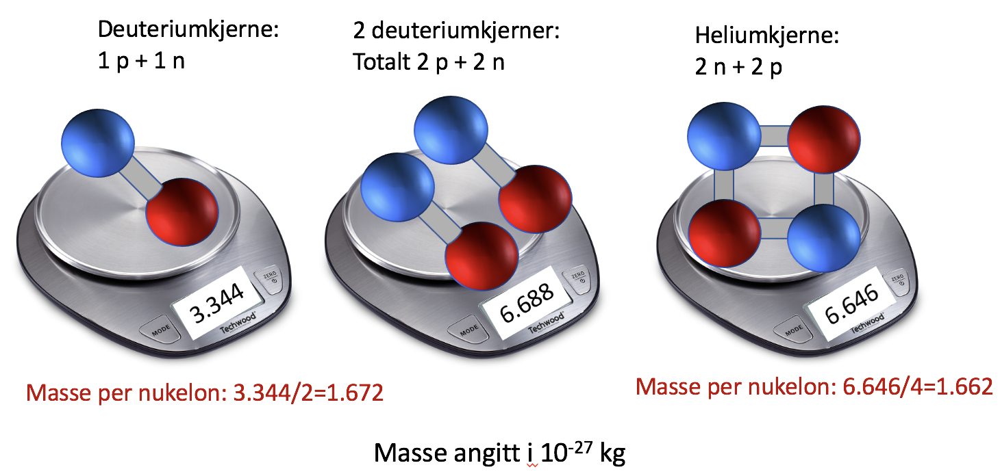

Forrige side🙂 🙁KjernemasserPADLET
OG svaret er: 
Hæææææ! Vi har nøyaktig de samme partiklene på den midterste og siste vekt, likevel veier de forskjellig? Nøyaktig hvorfor skal vi komme tilbake til i relativitetsteorien i del 2. Men i relativitetsteori så er energi inkludert i masseregnskapet, energi som kinetisk og potensiell bidrar til masse. Dermed er masse ikke en additiv størrelse i relativitetsteori. Neste side